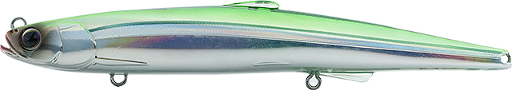
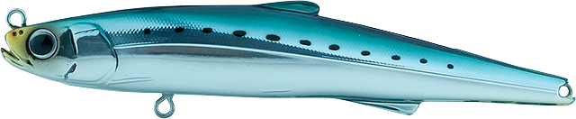
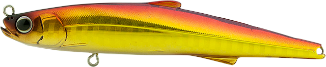
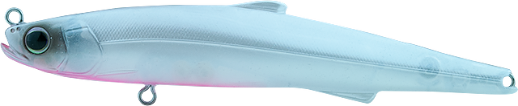
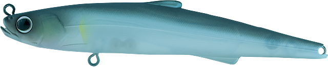
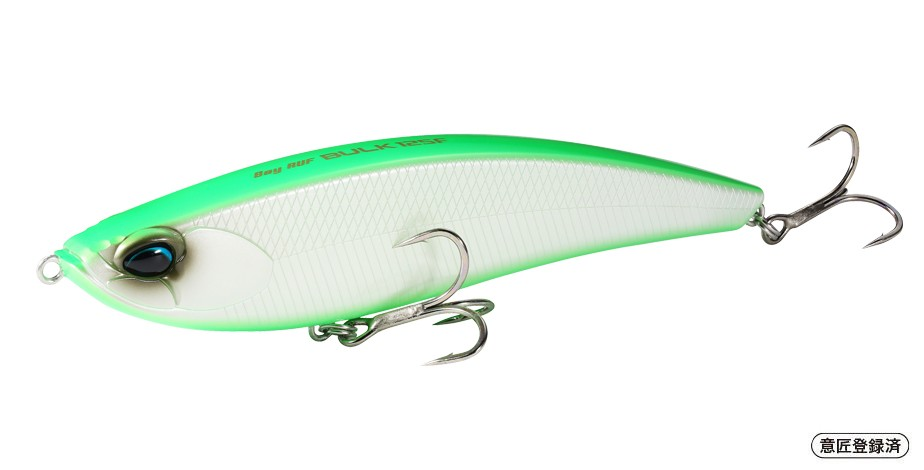

シェリー125F
（sherry 125F）
シェリー125F（sherry 125F）はhifumi creating（ヒフミクリエイティング）のリップレスミノーです。
全スピードレンジに対応する「リップレスベイト」をイメージして作られたシェリーの、125mmのフローティングモデル。水面直下の0〜50cmを、スローでは漂い、速く巻くと不規則に泳ぐ緩急で探れるのが最大の魅力です。

画像出典:hifumi creating公式HP
スペック
- メーカー
- hifumi creating（ヒフミクリエイティング）
- タイプ
- リップレスミノー（フローティング）
- 全長
- 125mm
- 自重
- 14g
- レンジ
- 0〜50cm
- フック
- がまかつRB MH #6（3フック）
- リング
- #3
- ターゲット
- シーバス
- 価格
- 2,530円（税込）
▼今すぐチェック
シェリー125Fの特徴
全スピードレンジに対応する、リップレスのチェンジオブペース
-
スピードで表情が変わるアクション
スローリトリーブではフラフラと漂うベイトを演出し、ミディアム〜ファーストでは不規則なアクションで違和感なく泳ぎきる。
-
イレギュラーダートで立体的に誘う
リトリーブジャークやロッドワークにはイレギュラーダートで応える。緩急だけでなく、上下左右の立体的なアプローチができる。
-
3フックと重心移動による飛距離
125mmのロングボディに3フックシステムを搭載し、フッキングとキャッチ率を高めている。リップがないことと重心移動の効果で、逆風でも飛距離が出る。
シェリー125Fの使い方
まずはスローに巻いて、水面直下をフラフラと漂わせましょう。
反応がなければ巻きスピードを上げたり、リトリーブジャークでダートを入れて緩急をつけると、喰わせの間を作れます。止めれば浮くので、ストラクチャーの上をかわす時にも使いやすいモデルです。
シェリー125Fの得意な状況
シャローや水面近くの魚に、不規則な動きで違和感なく口を使わせたい場面が出番です。
125mmのシルエットでアピールできるので、広いシャローを探りたい時にも向いています。
緩急で喰わせの間を作れるので、ほかのルアーに反応しない魚が釣れるきっかけになります。
ワンポイント
下のレンジも探りたい時は、同じ125mmの125SS（20〜80cm）に持ち替えると、シルエットを変えずにレンジだけ変えられます。
シェリーのサイズの使い分け
| モデル | 全長／自重 | 特徴 |
|---|---|---|
| 125F | 125mm／14g | レンジ0〜50cm。3フックのロングボディ（本記事のモデル） |
| 125SS | 125mm／15.5g | レンジ20〜80cm。125のスローシンキング |
| 95F／95SS | 95mm／7.6g・8.6g | シリーズのど真ん中サイズ。幅広い場面に |
| 80F／80SS | 80mm／5.4g・6.0g | 小さいベイトやスレた魚に |
シリーズは3サイズで、それぞれにフローティングとスローシンキングがあります。ベイトの大きさと、狙うレンジで選びましょう。
人気カラー
シェリー125Fは全9色展開。人気カラーを紹介します。

イワシ迷った時に使いやすいナチュラルカラー。

アカキン濁りや朝夕のローライトに強い定番カラー。

レッドベリーパールパールにレッドベリーを合わせたカラー。ナイトゲームのシルエット出しに。

マットアユアユをイメージしたマットカラー。河川でベイトに合わせたい時に。
画像出典:hifumi creating公式HP
▼今すぐチェック
シェリー125Fに似ているルアー
-
 コモモSF-125
ima
詳細はこちら＞
コモモSF-125
ima
詳細はこちら＞
全長125mm・自重18gのシャローランナー。レンジ5〜50cmで、同じ125mmで同じレンジを探れる定番。
-

ベイルーフ バルク125F DUO 詳細はこちら＞全長125mm・自重25gのリップレスミノー。レンジ0.1〜0.6mで、ワイドボディの水押しで誘いたい時に。
-
 ハーデス127F
バスデイ
詳細はこちら＞
ハーデス127F
バスデイ
詳細はこちら＞
全長127mm・自重25.3gのリップレスシャローミノー。ゆっくり巻いて20〜50cmのレンジを探れる。